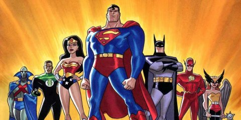

-

2004
Des fabricants de navigateurs web créent le web Hypertext Application Technology Working Group (WHATWG) dans le but, notamment, de relancer le développement du format HTML et de répondre aux nouveaux besoins sur une base technologique jugée plus aisément implémentable que celle du XHTML 2.0 en cours de conception.
-
2008
Les travaux du WHATWG ont été formellement adoptés en mai 2007 comme point de départ d’une nouvelle spécification d'HTML(HTML5). Ce document a été publié sous forme de Working Draft le 22 janvier 2008.
-

2011
En mai 2011, le groupe de travail qui bien a progressé sur la spécification HTML5, invite les communautés du W3C à confirmer le bien-fondé technique de la spécification ("Last Call").
-
2012
En Juillet 2012, WHATWG et le W3C ont décidé d'un degré de séparation. W3C continuera le travail de spécification HTML5, en se concentrant sur une norme unique et définitive HTML5.0. L'organisation WHATWG poursuivra ses travaux pour compléter, mettre à jour et amélioré HTML(5.1...). En Décembre 2012, W3C HTML5 est désigné comme Candidate Recommendation.
-

2014
En Septembre 2012, le W3C a proposé un plan pour établir une Recommandation HTML5 stable d'ici la fin de 2014 et une spécification HTML 5.1 Recommandation de la fin de 2016.